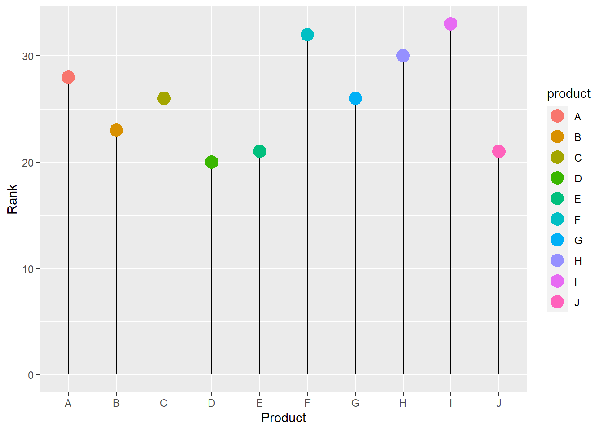

knitr::opts_chunk$set(echo = TRUE)
library(tidyverse) # includes ggplot for plotting
library(mosaic)
library(ggformula)
library(ggbump) # Bump Charts
library(ggiraphExtra) # Radar, Spine, Donut and Donut-Pie combo charts !!
# install.packages("devtools")
# devtools::install_github("ricardo-bion/ggradar")
library(ggradar) # Radar Plots🖏 Ratings and Rankings
Ranking
Bar Charts
Lollipop Charts
Radar Charts
Word Clouds
Bump Charts
Abstract
Comparisons between observations and between variables
Slides and Tutorials
TBD.
When we wish to compare the size of things and rank them, there are quite a few ways to do it.
Bar Charts and Lollipop Charts are immediately obvious when we wish to rank things on one aspect or parameter.
When we wish to rank the same set of objects against multiple aspects or parameters, then we can use Bump Charts and Radar Charts.
# Sample data set
set.seed(1)
df1 <- tibble(product = LETTERS[1:10],
rank = sample(20:35, 10, replace = TRUE))
df1gf_segment(0 + rank ~ product + product, data = df1) %>%
# A formula with shape y + yend ~ x + xend.
gf_point(rank ~ product, colour = ~ product,
size = 5,
ylab = "Rank",
xlab = "Product")
We can flip this horizontally and reorder the \(x\) categories in order of decreasing ( or increasing ) \(y\), using forcats::fct_reorder:

Bump Charts track the ranking of several objects based on other parameters, such as time/month or even category. For instance, what is the opinion score of a set of products across various categories of users?
year <- rep(2019:2021, 4)
position <- c(4, 2, 2, 3, 1, 4, 2, 3, 1, 1, 4, 3)
product <- c("A", "A", "A",
"B", "B", "B",
"C", "C", "C",
"D", "D", "D")
df2 <- tibble(year,position,product)
df2ggbump uses ggplot syntax
We need to use a new package called, what else, ggbump to create our Bump Charts: Here again we do not yet have a ggformula equivalent . Note the + syntax with ggplot code!!
library(ggbump)
ggplot(df2) +
geom_bump(aes(x = year, y = position, color = product)) +
geom_point(aes(x = year, y = position, color = product),
size = 6) +
theme_minimal() +
xlab("Year") +
ylab("Rank") +
scale_color_brewer(palette = "RdBu") # Change Colour Scale
We can add labels along the “bump lines” and remove the legend altogether:
ggplot(df2) +
geom_bump(aes(x = year, y = position, color = product)) +
geom_point(aes(x = year, y = position, color = product),
size = 6) +
theme_minimal() +
scale_color_brewer(palette = "RdBu") + # Change Colour Scale
# Same as before up to here
# Add the labels at start and finish
geom_text(data = df2 %>% filter(year == min(year)),
aes(x = year - 0.1, label = product, y = position),
size = 5, hjust = 1) +
geom_text(data = df2 %>% filter(year == max(year)),
aes(x = year + 0.1, label = product, y = position),
size = 5, hjust = 0) +
xlab("Year") +
ylab("Rank") +
theme(legend.position = "none")
What if your marketing folks had rated some products along several different desirable criteria? Such data, where a certain set of items (Qualitative!!) are rated (Quantitative !!) against another set (Qualitative again!!) can be plotted on a roughly circular set of axes, with the radial distance defining the rank against each axes.
Of course, we will use the aptly named ggradar, which is at this time (Feb 2023) a development version and not yet part of CRAN. We will still try it, and another package ggiraphExtra which IS a part of CRAN ( and has some other capabilities too, which are worth exploring!)
#library(ggradar)
set.seed(4)
df3 <- tibble(Product = c("G1", "G2", "G3"),
Power = runif(3),
Cost = runif(3),
Harmony = runif(3),
Style = runif(3),
Size = runif(3),
Manufacturability = runif(3),
Durability = runif(3),
Universality = runif(3))
df3
Wide Form Data
Look at the data: this is wide form data. The columns pertaining to each of the Product-Features would normally be stacked into two columns, one with the Feature and the other with the score. Note the trio: Qual(Product) + Quant(Scores) + Qual(Criteria, multi-column)
ggradar
ggradar::ggradar(plot.data = df3,
axis.label.size = 3, # Titles of Params
grid.label.size = 4, # Score Values/Circles
group.point.size = 3,# Product Points Sizes
group.line.width = 1, # Product Line Widths
fill = TRUE, # fill the radar polygons
fill.alpha = 0.3, # Not too dark, Arvind
legend.title = "Product") +
theme_void()
ggiraphExtra
From the ggiraphExtra website:
Package
ggiraphExtracontains many useful functions for exploratory plots. These functions are made by both ‘ggplot2’ and ‘ggiraph’ packages. You can make a static ggplot or an interactive ggplot by setting the parameter interactive=TRUE.
# library(ggiraphExtra)
ggiraphExtra::ggRadar(data = df3,
aes(colour = Product),
rescale = FALSE,
title = "Using ggiraphExtra"
) + # recale = TRUE makes it look different...try!!
theme_minimal()
Both render very similar-looking radar charts and the syntax is not too intimidating!!
- Take the
HELPrctdataset from our well usedmosaicDatapackage. Plot ranking charts using each of the public health issues that you can see in that dataset. What choice will you make for the the axes? - Try the
SaratogaHousesdataset also frommosaicData.
- Keon-Woong Moon, R Package
ggiraphExtra, https://cran.r-project.org/web/packages/ggiraphExtra/vignettes/introduction.html